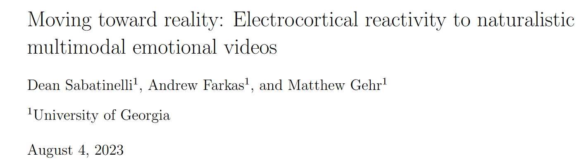

对自然多模态情感视频的皮层电反应

摘要：以往的研究已经探究了情绪视频对外周生理测量和意识体验的影响，而本研究则将研究扩展到了大脑皮层测量，特别是稳态视觉诱发电位（ssVEP）。研究人员精心策划了 45 段视频，这些视频代表了广泛的情感和中性内容，并以闪烁的边框呈现。这些视频采用连续的单镜头视角、自然的背景音乐，并排除了与专业电影相关的元素，以增强真实感。研究结果表明，在观看情感视频时，ssVEP 振幅会持续降低，这与短片的情感强度评级密切相关。这表明叙事视听刺激有可能追踪大脑皮层的动态情绪处理，为情感神经科学的研究提供了新的途径。研究结果凸显了使用逼真的视频刺激来研究人脑如何在一个提高生态有效性的范式中处理情绪事件的潜力。未来的研究可以通过扩大视频集、针对特定皮层网络和操纵叙事可预测性来进一步发展这一范式。总之，这项研究为使用逼真的视频刺激来研究情绪感知奠定了基础，并有可能拓展我们对现实世界中人脑情绪处理的理解。
多模态视频的复杂性使其成为一种难以控制的实验刺激，尤其是对皮层电测量而言。
据我们所知，只有两项研究在记录脑电图时使用了视频刺激来诱发情绪状态，这两项研究都评估了阿尔法波段功率的变化。其中一项研究报告称，恐惧、悲伤或中性视频内容对额叶α功率没有不同的影响（Dennis 和 Solomon，2010 年），另一项研究同时使用了视频和场景（Simons 等人，2003 年），并报告称，与中性视频相比，在唤醒过程中顶叶α功率出现了可靠的下降。对情绪视频感知的脑电图研究很少的一个可能原因仅仅是方法上的，因为没有单一的刺激事件可以对事件相关电位（ERP）进行平均，而ERP是分析皮层电活动最常用的方法。
与静态场景相比，多模态视频片段在记录脑电图（EEG）时，在实验控制方面存在一些问题。为了解释不同视频内容在皮层电反应性上的潜在差异，视频集在基本感觉和知觉特征上不应有系统性差异，同时保留促进真实感的因素（Allison, Wilcox, & Kazimi, 2013; Lin & Peng, 2015）。这些因素包括连续的单镜头、将观众置于地面位置的景观视角、没有音乐或旁白的环境音轨，以及没有专业创作痕迹的视频质量，以增强短片代表真实事件的印象。选择 10 秒钟的相对较短的持续时间，是为了提供足够短的时间，以便从不同的情感内容类别中选择多个示例，但又要有足够长的时间来吸引和维持情感状态，以便记录大脑皮层的反应。
视频刺激集 . 制作这组视频的目的是在保持视频基本感知特征合理不变的情况下，表现各种不同的情感和中性内容。视频的时长被剪辑为 10 秒，目的是让观众能够快速识别情境的性质，并在整个时间间隔内保持叙事性。视频采用单镜头视角，使观众大致与视线平齐，并配有自然的背景音乐。视频中没有可识别的演员，也没有与专业电影相关的高制作价值元素（如专业灯光、构图）。这样做的目的是尽量减少人为因素，以免破坏观众对片段所描述真实事件的信念。在选择视频时，情感视频和中性视频的响度和动作程度大致相同，以避免情感和动作的混淆。
我们从互联网上收集了 45 个符合上述标准的短片，这些短片描述了一系列令人愉快、中性和不愉快的情况。这些视频被分为 5 组，每组 9 个视频。其中四类视频描述的是情绪化的情境，实验人员判断这些情境具有高度唤醒性（过山车、热恋情侣、生动的外科手术、直接威胁）或适度唤醒性（小狗、可爱的婴儿；间接威胁）。其中一组 9 段视频描述的是活跃而普通的生活经历（走在繁忙的街道上、厨房里辛勤工作的员工）。这些视频片段的一些基本感知质量被量化。其中包括声音强度，使用 BAFX 3370 数字声级计测量，声级计放置在视频片段的左侧。音频由戴尔 A5253 扬声器系统提供，该系统带有低音炮，直接置于视频监视器下方，响度以每秒记录两次的分贝（A 加权）值进行评估，并对每段视频取平均值。亮度是通过将彩色视频转换成灰度，并对每个视频帧的 0-255 值取平均值来确定的。使用 Magick R 软件包 2.7.3 版（Ooms，2021 年），将视频中描述的运动量化为每个视频连续帧之间灰度像素值的平均差异。例如，在视频的高运动量期间，许多像素在帧与帧之间的亮度变化会很大。对这些变化进行平均，得出代表每段视频中总运动量的分数。最后，香农熵（Shannon’s entropy）被用作感知复杂性的指标，通过量化每帧中的熵值来提供每段 10 秒视频的平均值和标准偏差。这些量化的视频特征将与我们从参与者样本中收集到的皮层电数据以及愉快度和唤醒度的情绪评分相关联。